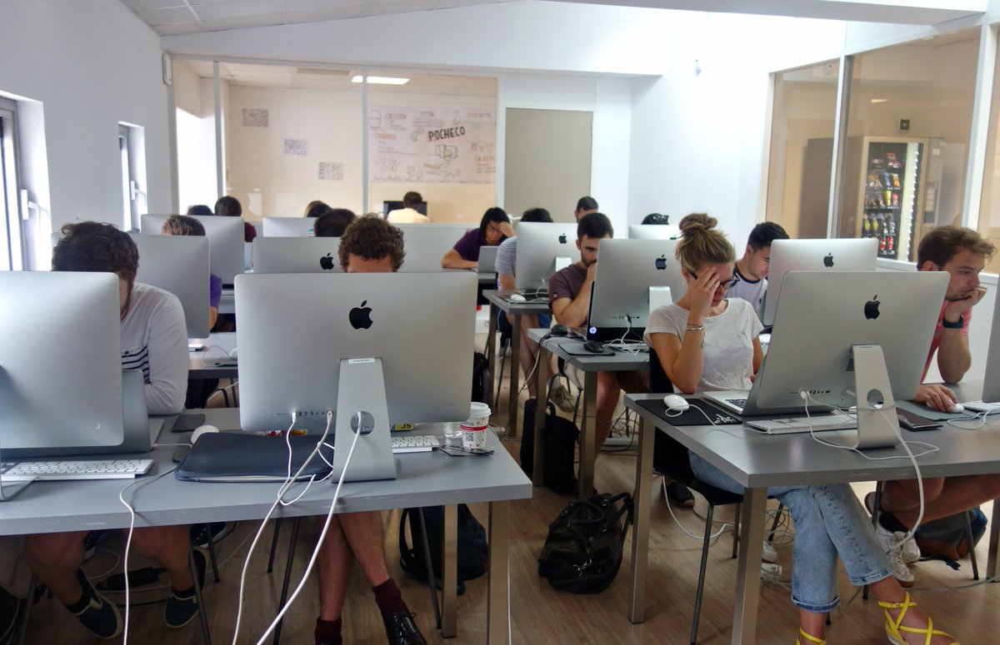

Hi, I'm Margot Gregorieff
Etudiante en troisième année de bachelor Chef de Projet à l'ECV digital de Bordeaux, ce site me permet de mettre en application mes compétences en HTML et CSS tout en utilisant GitHub.

Etudiante en troisième année de bachelor Chef de Projet à l'ECV digital de Bordeaux, ce site me permet de mettre en application mes compétences en HTML et CSS tout en utilisant GitHub.
Ce site est composé de 5 pages HTML, dont vous avez l'accès dans le header, ainsi que 5 fichiers CSS :
J'ai essentiellement utilisé une mise en page à partir de Flexbox car c'est ce que je maîtrise le mieux et c'est qui m'apporte le résultat le plus satisfaisant.
J'ai également utilisé des Medias Queries afin d'adapter mon site à différentes tailles d'écran ainsi que quelques transitions pour un résultat plus dynamique.
J'ai intégré l'ECV digital en spetembre 2020, après avoir déjà obtenu plusieurs diplômes liés de près ou de loin au numérique. Mon but est d'intégrer le mastère Webdesign l'année prochaine.
L'ECV digital est une école du numérique et du web, qui développe la curiosité de ses étudiants et leur sens de l’analyse pour leur apprendre à évoluer dans un secteur qui ne dort jamais.